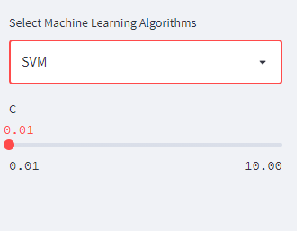

Create an Interactive Web App for Data Science in 10 Minutes With Streamlit
In this article, we will use streamlit library to create a interactive web app of training a machine learning model for breast cancer dataset.
- What is Streamlit
- Basic usage of Streamlit
- Create a demo app
- Conclusion

What is Streamlit
Streamlit is a Python library that can turn data scripts into shareable web apps in minutes.
All in pure Python. No front‑end experience required.
As described on the official website, it is the fastest way to build and share data apps.
When we want to show our data analysis or machine learning to customers as soon as possible, we need this library.
Basic usage of Streamlit
We can learn the basic usage of Streamlit by referencing the cheat sheet below.
Create a demo app
We will create a web app to training a machine learning model for breast cancer dataset.
We use the VS code as IDE(Integrated Development Environment) and Pipenv as virtual environment management tool.
You can read the two articles below to learn about how to create a programming environment.
Let’s Create a Programming Environment
https://thats-it-code.com/programming/lets-create-a-programming-environment/
How to Create Python Virtual Environment
https://thats-it-code.com/programming/how-to-create-python-virtual-environment/
Create a new folder and open it in VS Code
Create a new virtual environment
Open a new bash shell, and enter the command below to create a new python virtual environment.
pipenv --python 3
Install the required libraries
Firstly, let’s install the library for machine learning and plotting charts.
pipenv install streamlit
pipenv install scikit-learn
pipenv install matplotlib
And enter the virtual environment.
pipenv shell
Create the python file
Import required libraries
import streamlit as st
import numpy as np
import matplotlib.pyplot as plt
from sklearn import datasets
from sklearn.model_selection import train_test_split
from sklearn.decomposition import PCA
from sklearn.svm import SVC
from sklearn.neighbors import KNeighborsClassifier
from sklearn.ensemble import RandomForestClassifier
from sklearn.metrics import accuracy_score
But you can see the wavy underline show under the import code.
The reason is the current Python runtime is the default one, not the created virtual environment.
We can click the Python runtime on the status bar and select the virtual environment created above.
The virtual environment name starts with our project folder name.
You will find all warning disappeared.
Add Title and Subheader
Next, let’s add a title for our app using st.title() method.
st.title('Streamlit Demo')
Let’s execute streamlit run <app name> to see the result.
streamlit run app.py
And open the URL output in the terminal and the title set above will be displayed.
And add a subheader.
st.subheader('Training a machine learning model online')
When the source code is changed, two buttons will be shown in the upper right corner of the page. One is Rerun, and the other one is Always rerun. Let’s click the Always rerun button.
The page will always be updated when the source code changed.
Load the breast cancer dataset
data = datasets.load_breast_cancer()
X = data.data
y = data.target
And show the dimensions of data on the page.
st.write('Shape of X:', X.shape)
st.write('Target number:', len(np.unique(y)))
There are 569 rows and 30 columns and two target values in the breast cancer dataset.
Next let’s show top 5 rows by trying the magic syntax (single line).
To show the data and column name, we should convert the data to Pandas DataFrame.
import pandas as pd
df = pd.DataFrame(X, columns=data.feature_names)
df[:5]
Set up three Machine Learning Algorithms
We will use KNN, SVM, Random Forest to train machine learning model for the dataset.
Firstly let’s add the three algorithms on the left side.
clf_name = st.sidebar.selectbox(
'Select Machine Learning Algorithms',
('KNN', 'SVM', 'Random Forest')
)
st.write(f"""
You are using **{clf_name}** classifier.
""")
Let’s add the corresponding parameter adjustment part according to the selected classifer on the left side bar.
To learn about the detail of each classifier, you can reference the official document.
sklearn.svm.SVC
sklearn.neighbors.KNeighborsClassifier
sklearn.ensemble.RandomForestClassifier
if clf_name == 'SVM':
C = st.sidebar.slider('C', 0.01, 10.0)
elif clf_name == 'KNN':
K = st.sidebar.slider('K', 1, 20)
else:
max_depth = st.sidebar.slider('max_depth', 2, 32)
n_estimators = st.sidebar.slider('n_estimators', 1, 50)

Next, create classifier instance based the selected classifier name and its parameters.
if clf_name == 'SVM':
clf = SVC(C=C)
elif clf_name == 'KNN':
clf = KNeighborsClassifier(n_neighbors=K)
else:
clf = RandomForestClassifier(n_estimators=max_depth,
max_depth=n_estimators, random_state=42)
Train the model and calculate the accuracy
X_train, X_test, y_train, y_test = train_test_split(X, y, test_size=0.3, random_state=42)
clf.fit(X_train, y_train)
y_pred = clf.predict(X_test)
accuracy = accuracy_score(y_test, y_pred)
st.write(f'Classifier: **{clf_name}**')
st.write(f'Accuracy: **{round(accuracy*100, 2)}%**')
Let’s try to change the classifier to SVM and see the training result.

Draw the result based PCA algorithm
We can’t draw the data directly because the breast cancer dataset has 30 dimensions.
But we can use the PCA(Principal component analysis) to reduce the dimensions to two dimensions.
pca = PCA(2)
X_2d = pca.fit_transform(X)
x1 = X_2d[:, 0]
x2 = X_2d[:, 1]
fig = plt.figure()
plt.scatter(x1, x2,
c=y, alpha=0.7,
cmap='viridis')
plt.xlabel('PCA x1')
plt.ylabel('PCA x2')
plt.colorbar()
st.pyplot(fig)
Conclusion
In this article, we introduced the Stremlit library and its basic usage.
And create the development environment and create the demo app step by step.
The complete code is as follows.
import streamlit as st
import numpy as np
import matplotlib.pyplot as plt
from sklearn import datasets
from sklearn.model_selection import train_test_split
from sklearn.decomposition import PCA
from sklearn.svm import SVC
from sklearn.neighbors import KNeighborsClassifier
from sklearn.ensemble import RandomForestClassifier
from sklearn.metrics import accuracy_score
## Add Title and Subheader
st.title('Streamlit Demo')
st.subheader('Training a machine learning model online')
## Load the breast cancer dataset
data = datasets.load_breast_cancer()
X = data.data
y = data.target
st.write('Shape of X:', X.shape)
st.write('Target number:', len(np.unique(y)))
import pandas as pd
df = pd.DataFrame(X, columns=data.feature_names)
df[:5]
## Set up three Machine Learning Algorithms
clf_name = st.sidebar.selectbox(
'Select Machine Learning Algorithms',
('KNN', 'SVM', 'Random Forest')
)
st.write(f"""
You are using **{clf_name}** classifier.
""")
if clf_name == 'SVM':
C = st.sidebar.slider('C', 0.01, 10.0)
elif clf_name == 'KNN':
K = st.sidebar.slider('K', 1, 20)
else:
max_depth = st.sidebar.slider('max_depth', 2, 32)
n_estimators = st.sidebar.slider('n_estimators', 1, 50)
if clf_name == 'SVM':
clf = SVC(C=C)
elif clf_name == 'KNN':
clf = KNeighborsClassifier(n_neighbors=K)
else:
clf = RandomForestClassifier(n_estimators=max_depth,
max_depth=n_estimators, random_state=42)
## Train the model and calculate the accuracy
X_train, X_test, y_train, y_test = train_test_split(X, y, test_size=0.3, random_state=42)
clf.fit(X_train, y_train)
y_pred = clf.predict(X_test)
accuracy = accuracy_score(y_test, y_pred)
st.write(f'Classifier: **{clf_name}**')
st.write(f'Accuracy: **{round(accuracy*100, 2)}%**')
## Draw the result based PCA algorithm
pca = PCA(2)
X_2d = pca.fit_transform(X)
x1 = X_2d[:, 0]
x2 = X_2d[:, 1]
fig = plt.figure()
plt.scatter(x1, x2,
c=y, alpha=0.7,
cmap='viridis')
plt.xlabel('PCA x1')
plt.ylabel('PCA x2')
plt.colorbar()
st.pyplot(fig)
And the complete web page results are as follows.